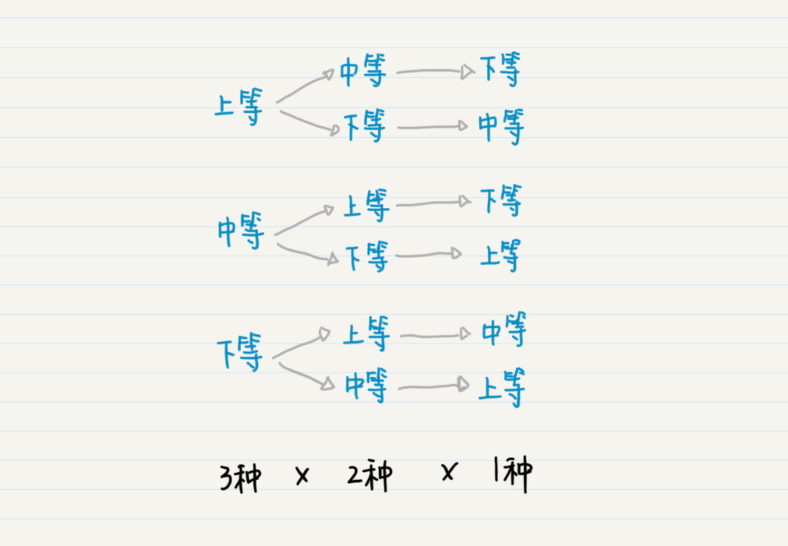

- 01 二进制：不了解计算机的源头，你学什么编程.md
- 02 余数：原来取余操作本身就是个哈希函数.md
- 03 迭代法：不用编程语言的自带函数，你会如何计算平方根？.md
- 04 数学归纳法：如何用数学归纳提升代码的运行效率？.md
- 05 递归（上）：泛化数学归纳，如何将复杂问题简单化？.md
- 06 递归（下）：分而治之，从归并排序到MapReduce.md
- 07 排列：如何让计算机学会“田忌赛马”？.md
- 08 组合：如何让计算机安排世界杯的赛程？.md
- 09 动态规划（上）：如何实现基于编辑距离的查询推荐？.md
- 10 动态规划（下）：如何求得状态转移方程并进行编程实现？.md
- 11 树的深度优先搜索（上）：如何才能高效率地查字典？.md
- 12 树的深度优先搜索（下）：如何才能高效率地查字典？.md
- 13 树的广度优先搜索（上）：人际关系的六度理论是真的吗？.md
- 14 树的广度优先搜索（下）：为什么双向广度优先搜索的效率更高？.md
- 15 从树到图：如何让计算机学会看地图？.md
- 16 时间和空间复杂度（上）：优化性能是否只是“纸上谈兵”？.md
- 17 时间和空间复杂度（下）：如何使用六个法则进行复杂度分析？.md
- 18 总结课：数据结构、编程语句和基础算法体现了哪些数学思想？.md
- 19 概率和统计：编程为什么需要概率和统计？.md
- 20 概率基础（上）：一篇文章帮你理解随机变量、概率分布和期望值.md
- 21 概率基础（下）：联合概率、条件概率和贝叶斯法则，这些概率公式究竟能做什么？.md
- 22 朴素贝叶斯：如何让计算机学会自动分类？.md
- 23 文本分类：如何区分特定类型的新闻？.md
- 24 语言模型：如何使用链式法则和马尔科夫假设简化概率模型？.md
- 25 马尔科夫模型：从PageRank到语音识别，背后是什么模型在支撑？.md
- 26 信息熵：如何通过几个问题，测出你对应的武侠人物？.md
- 27 决策树：信息增益、增益比率和基尼指数的运用.md
- 28 熵、信息增益和卡方：如何寻找关键特征？.md
- 29 归一化和标准化：各种特征如何综合才是最合理的？.md
- 30 统计意义（上）：如何通过显著性检验，判断你的A_B测试结果是不是巧合？.md
- 31 统计意义（下）：如何通过显著性检验，判断你的A_B测试结果是不是巧合？.md
- 32 概率统计篇答疑和总结：为什么会有欠拟合和过拟合？.md
- 33 线性代数：线性代数到底都讲了些什么？.md
- 34 向量空间模型：如何让计算机理解现实事物之间的关系？.md
- 35 文本检索：如何让计算机处理自然语言？.md
- 36 文本聚类：如何过滤冗余的新闻？.md
- 37 矩阵（上）：如何使用矩阵操作进行PageRank计算？.md
- 38 矩阵（下）：如何使用矩阵操作进行协同过滤推荐？.md
- 39 线性回归（上）：如何使用高斯消元求解线性方程组？.md
- 40 线性回归（中）：如何使用最小二乘法进行直线拟合？.md
- 41 线性回归（下）：如何使用最小二乘法进行效果验证？.md
- 42 PCA主成分分析（上）：如何利用协方差矩阵来降维？.md
- 43 PCA主成分分析（下）：为什么要计算协方差矩阵的特征值和特征向量？.md
- 44 奇异值分解：如何挖掘潜在的语义关系？.md
- 45 线性代数篇答疑和总结：矩阵乘法的几何意义是什么？.md
- 46 缓存系统：如何通过哈希表和队列实现高效访问？.md
- 47 搜索引擎（上）：如何通过倒排索引和向量空间模型，打造一个简单的搜索引擎？.md
- 48 搜索引擎（下）：如何通过查询的分类，让电商平台的搜索结果更相关？.md
- 49 推荐系统（上）：如何实现基于相似度的协同过滤？.md
- 50 推荐系统（下）：如何通过SVD分析用户和物品的矩阵？.md
- 51 综合应用篇答疑和总结：如何进行个性化用户画像的设计？.md
- 导读：程序员应该怎么学数学？.md
- 开篇词 作为程序员，为什么你应该学好数学？.md
- 数学专栏课外加餐（一） 我们为什么需要反码和补码？.md
- 数学专栏课外加餐（三）：程序员需要读哪些数学书？.md
- 数学专栏课外加餐（二） 位操作的三个应用实例.md
- 结束语 从数学到编程，本身就是一个很长的链条.md
07 排列：如何让计算机学会“田忌赛马”？
你好，我是黄申。
“田忌赛马”的故事我想你肯定听过吧？田忌是齐国有名的将领，他常常和齐王赛马，可是总是败下阵来，心中非常不悦。孙膑想帮田忌一把。他把这些马分为上、中、下三等。他让田忌用自己的下等马来应战齐王的上等马，用上等马应战齐王的中等马，用中等马应战齐王的下等马。三场比赛结束后，田忌只输了第一场，赢了后面两场，最终赢得与齐王的整场比赛。
孙膑每次都从田忌的马匹中挑选出一匹，一共进行三次，排列出战的顺序。是不是感觉这个过程很熟悉？这其实就是数学中的排列过程。
我们初高中的时候，都学过排列，它的概念是这么说的：从n个不同的元素中取出m（1≤m≤n）个不同的元素，按照一定的顺序排成一列，这个过程就叫排列（Permutation）。当m=n这种特殊情况出现的时候，比如说，在田忌赛马的故事中，田忌的三匹马必须全部出战，这就是全排列（All Permutation）。
如果选择出的这m个元素可以有重复的，这样的排列就是为重复排列（Permutation with Repetition），否则就是不重复排列（Permutation without Repetition）。

看出来没有？这其实是一个树状结构。从树的根结点到叶子结点，每种路径都是一种排列。有多少个叶子结点就有多少种全排列。从图中我们可以看出，最终叶子结点的数量是3x2x1=6，所以最终排列的数量为6。
{上等，中等，下等}
{上等，下等，中等}
{中等，上等，下等}
{中等，下等，上等}
{下等，上等，中等}
{下等，中等，上等}
我用t1，t2和t3分别表示田忌的上、中、下等马跑完全程所需的时间，用q1，q2和q3分别表示齐王的上、中、下等马跑全程所需的时间，因此，q1 如果你将这些可能的排列，仔细地和齐王的上等、中等和下等马进行对比，只有{下等，上等，中等}这一种可能战胜齐王，也就是t3>q1，t1 对于最终排列的数量，这里我再推广一下： 对于n个元素的全排列，所有可能的排列数量就是nx(n-1)x(n-2)x…x2x1，也就是n!； 对于n个元素里取出m(0≤n)个元素的不重复排列数量是nx(n-1)x(n-2)x…x(n - m + 1)，也就是n!/(n-m)!。 这两点都是可以用数学归纳法证明的，有兴趣的话你可以自己尝试一下。 我们刚才讨论了3匹马的情况，这倒还好。可是，如果有30匹马、300匹马，怎么办？30的阶乘已经是天文数字了。更糟糕的是，如果两组马之间的速度关系也是非常随机的，例如q1 如果你细心的话，就会发现在新版舍罕王赏麦的案例中，其实已经涉及了排列的思想，不过那个案例不是以“选取多少个元素”为终止条件，而是以“选取元素的总和”为终止条件。尽管这样，我们仍然可以使用递归的方式来快速地实现排列。 不过，要把田忌赛马的案例，转成计算机所能理解的内容，还需要额外下点功夫。 首先，在不同的选马阶段，我们都要保存已经有几匹马出战、它们的排列顺序、以及还剩几匹马没有选择。我使用变量result来存储到当前函数操作之前，已经出战的马匹及其排列顺序。而变量horses存储了到当前函数操作之前，还剩几匹马还没出战。变量new_result和rest_horses是分别从result和horses克隆而来，保证不会影响上一次的结果。 其次，孙膑的方法之所以奏效，是因为他看到每一等马中，田忌的马只比齐王的差一点点。如果相差太多，可能就会有不同的胜负结局。所以，在设置马匹跑完全程的时间上，我特意设置为q1 另外，我还使用了compare的函数来比较田忌和齐王的马匹，看哪方获胜。 下面是测试代码。当然你可以设置更多的马匹，并增加相应的马匹跑完全程的时间。 在最终的输出结果中，6种排列中只有一种情况是田忌获胜的。 如果田忌不听从孙膑的建议，而是随机的安排马匹出战，那么他只有1/6的获胜概率。 说到这里，我突然产生了一个想法，如果齐王也是随机安排他的马匹出战顺序，又会是怎样的结果？如果动手来实现的话，大体思路是我们为田忌和齐王两方都生成他们马匹的全排序，然后再做交叉对比，看哪方获胜。这个交叉对比的过程也是个排列的问题，田忌这边有6种顺序，而齐王也是6种顺序，所以一共的可能性是6x6=36种。 我用代码模拟了一下，你可以看看。 由于交叉对比时只需要选择2个元素，分别是田忌的出战顺序和齐王的出战顺序，所以这里使用2层循环的嵌套来实现。从最后的结果可以看出，田忌获胜的概率仍然是1/6。 聊了这么多，相信你对排列有了更多了解。在概率中，排列有很大的作用，因为排列会帮助我们列举出随机变量取值的所有可能性，用于生成这个变量的概率分布，之后在概率统计篇我还会具体介绍。此外，排列在计算机领域中有着很多应用场景。我这里讲讲最常见的密码的暴力破解。 我们先来看去年网络安全界的两件大事。第一件发生在2017年5月，新型“蠕虫”式勒索病毒WannaCry爆发。当时这个病毒蔓延得非常迅速，电脑被感染后，其中的文件会被加密锁住，黑客以此会向用户勒索比特币。第二件和美国的信用评级公司Equifax有关。仅在2017年内，这个公司就被黑客盗取了大约1.46亿用户的数据。 看样子，黑客攻击的方式多种多样，手段也高明了很多，但是窃取系统密码仍然是最常用的攻击方式。有时候，黑客们并不需要真的拿到你的密码，而是通过“猜”，也就是列举各种可能的密码，然后逐个地去尝试密码的正确性。如果某个尝试的密码正好和原先管理员设置的一样，那么系统就被破解了。这就是我们常说的暴力破解法。 我们可以假设一个密码是由英文字母组成的，那么每位密码有52种选择，也就是大小写字母加在一起的数量。那么，生成m位密码的可能性就是52^m种。也就是说，从n（这里n为52）个元素取出m（0≤n）个元素的可重复全排列，总数量为n^m。如果你遍历并尝试所有的可能性，就能破解密码了。 不过，即使存在这种暴力法，你也不用担心自己的密码很容易被人破解。我们平时需要使用密码登录的网站或者移动端App程序，基本上都限定了一定时间内尝试密码的次数，例如1天之内只能尝试5次等等。这些次数一定远远小于密码排列的可能性。 这也是为什么有些网站或App需要你一定使用多种类型的字符来创建密码，比如字母加数字加特殊符号。因为类型越多，n^m中的n越大，可能性就越多。如果使用英文字母的4位密码，就有52^4=7311616种，超过了700万种。如果我们在密码中再加入0～9这10个阿拉伯数字，那么可能性就是62^4=14776336种，超过了1400万。 同理，我们也可以增加密码长度，也就是用n^m中的m来实现这一点。如果在英文和阿拉伯数字的基础上，我们把密码的长度增加到6位，那么就是62^6=56800235584种，已经超过了568亿了！这还没有考虑键盘上的各种特殊符号。有人估算了一下，如果用上全部256个ASCII码字符，设置长度为8的密码，那么一般的黑客需要10年左右的时间才能暴力破解这种密码。 排列可以帮助我们生成很多可能性。由于这种特性，排列最多的用途就是穷举法，也就是，列出所有可能的情况，一个一个验证，然后看每种情况是否符合条件的解。 古代的孙膑利用排列的思想，穷举了田忌马匹的各种出战顺序，然后获得了战胜齐王的策略。现代的黑客，通过排列的方法，穷举了各种可能的密码，试图破坏系统的安全性。如果你所面临的问题，它的答案也是各种元素所组成的排列，那么你就可以考虑，有没有可能排列出所有的可能性，然后通过穷举的方式来获得最终的解。 假设有一个4位字母密码，每位密码是a～e之间的小写字母。你能否编写一段代码，来暴力破解该密码？（提示：根据可重复排列的规律，生成所有可能的4位密码。） 欢迎在留言区交作业，并写下你今天的学习笔记。你可以点击“请朋友读”，把今天的内容分享给你的好友，和他一起精进。
如何让计算机为田忌安排赛马？
import java.util.ArrayList;
import java.util.Arrays;
import java.util.HashMap;
public class Lesson7_1 {
// 设置齐王的马跑完所需时间
public static HashMap<String, Double> q_horses_time = new HashMap<String, Double>(){
{
put("q1", 1.0);
put("q2", 2.0);
put("q3", 3.0);
}
};
// 设置田忌的马跑完所需时间
public static HashMap<String, Double> t_horses_time = new HashMap<String, Double>(){
{
put("t1", 1.5);
put("t2", 2.5);
put("t3", 3.5);
}
};
public static ArrayList<String> q_horses = new ArrayList<String>(Arrays.asList("q1", "q2", "q3"));
/**
* @Description: 使用函数的递归（嵌套）调用，找出所有可能的马匹出战顺序
* @param horses-目前还剩多少马没有出战，result-保存当前已经出战的马匹及顺序
* @return void
*/
public static void permutate(ArrayList<String> horses, ArrayList<String> result) {
// 所有马匹都已经出战，判断哪方获胜，输出结果
if (horses.size() == 0) {
System.out.println(result);
compare(result, q_horses);
System.out.println();
return;
}
for (int i = 0; i < horses.size(); i++) {
// 从剩下的未出战马匹中，选择一匹，加入结果
ArrayList<String> new_result = (ArrayList<String>)(result.clone());
new_result.add(horses.get(i));
// 将已选择的马匹从未出战的列表中移出
ArrayList<String> rest_horses = ((ArrayList<String>)horses.clone());
rest_horses.remove(i);
// 递归调用，对于剩余的马匹继续生成排列
permutate(rest_horses, new_result);
}
}
}
public static void compare(ArrayList<String> t, ArrayList<String> q) {
int t_won_cnt = 0;
for (int i = 0; i < t.size(); i++) {
System.out.println(t_horses_time.get(t.get(i)) + " " + q_horses_time.get(q.get(i)));
if (t_horses_time.get(t.get(i)) < q_horses_time.get(q.get(i))) t_won_cnt ++;
}
if (t_won_cnt > (t.size() / 2)) System.out.println("田忌获胜！");
else System.out.println("齐王获胜！");
System.out.println();
}
public static void main(String[] args) {
ArrayList<String> horses = new ArrayList<String>(Arrays.asList("t1", "t2", "t3"));
Lesson7_1.permutate(horses, new ArrayList<String>());
}
[t3, t1, t2]
3.5 1.0
1.5 2.0
2.5 3.0
田忌获胜！
public static void main(String[] args) {
ArrayList<String> t_horses = new ArrayList<String>(Arrays.asList("t1", "t2", "t3"));
Lesson7_2.permutate(t_horses, new ArrayList<String>(), t_results);
ArrayList<String> q_horses = new ArrayList<String>(Arrays.asList("q1", "q2", "q3"));
Lesson7_2.permutate(q_horses, new ArrayList<String>(), q_results);
System.out.println(t_results);
System.out.println(q_results);
System.out.println();
for (int i = 0; i < t_results.size(); i++) {
for (int j = 0; j < q_results.size(); j++) {
Lesson7_2.compare(t_results.get(i), q_results.get(j));
}
}
}
暴力破解密码如何使用排列思想？
小结
思考题
© 2019 - 2023 Liangliang Lee. Powered by gin and hexo-theme-book.